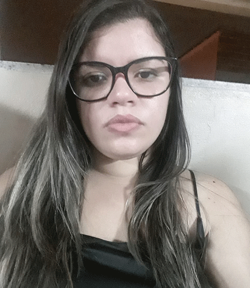

Sobre
Designer & comunicação visual
26 anos, carioca.
Formada em desenho industrial na Escola
Superior de Desenho Industrial (Esdi - UERJ), com foco em design gráfico e comunicação
visual.
Trabalho com peças para redes sociais, diagramação de e-books e revistas, identidade
visual, layout para e-mail marketing, landind pages e materiais impressos. Iniciante em
programação full stack.
Gosto de assistir
filmes no cinema e séries por plataformas de streaming, conheçer lugares novos, restaurantes e
praias.